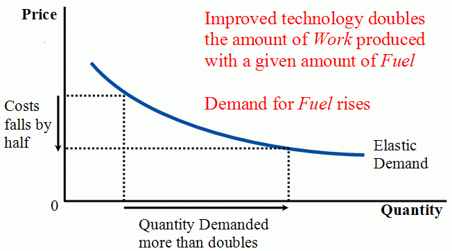
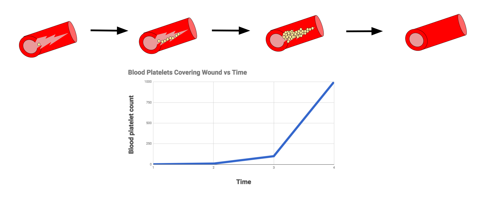

Executive Summary
지난 4년 동안 토큰 단가는 98% 내렸다. 그런데 같은 기간 기업의 AI 청구서는 320% 늘었다. 가격이 떨어졌는데 지출이 세 배가 된 이 모순은 계산 착오가 아니다. 단가를 보고 예산을 짠 조직과, 실제로 토큰을 태우는 에이전트 사이에 끼어 있는 변수 하나를 모두가 빼먹었기 때문이다. 이 글은 그 변수가 무엇이고, 왜 그것이 데이터 품질의 문제인지 본다.
그 변수는 재시도(retry)다. 단순 챗봇은 한 번 묻고 한 번 답한다. 에이전트는 출력이 기준에 못 미치면 누적된 대화 맥락을 통째로 다시 던지며 다시 시도한다. 10턴짜리 세션의 비용은 10배가 아니라 약 50배로 불어난다. 인터랙션 단가가 챗봇 $0.04에서 에이전트 $1.20으로 30배 뛴 이유가 여기 있다. 토큰값이 싸질수록 사람들은 에이전트를 더 자주 돌렸고, 그 에이전트는 실패할 때마다 같은 토큰을 반복해 태웠다.
한 발 더 들어가면 재시도를 부르는 것은 결국 입력 데이터다. 노이즈가 많고 정합성이 깨진 데이터는 할루시네이션과 검증 실패를 낳고, 그 실패가 재시도 루프를 돌린다. 그렇다면 데이터 품질은 정확도 지표이기 전에 청구서에 직접 찍히는 비용이다. AI-Ready Data가 윤리의 문제가 아니라 회계의 문제로 바뀌는 지점이 바로 여기다.
주요 수치
출처: The Next Web, Optimum Partners, EY
98%↓
토큰 단가 하락
$20 → $0.40/백만 토큰 (2022→2026)
320%↑
기업 AI 청구서 증가
단가는 내리고 지출은 세 배
~50배
재시도 10회 토큰 소모
단일 선형 패스 대비 누적
$0.04→$1.20
인터랙션당 비용
챗봇 → 에이전트, 30배
가격표와 청구서 사이 — 역설의 구조
2022년에 GPT-4급 처리에는 백만 토큰당 약 20달러가 들었다. 2026년 현재 같은 처리의 블렌디드 단가는 0.40달러 안팎이다. 98% 하락이다. GPT-3 시대까지 거슬러 올라가면 낙폭은 99.7%에 이른다. 단가 그래프만 보면 "AI는 점점 공짜에 가까워진다"는 결론이 자연스럽다. 많은 조직이 2026년 예산을 그 가정 위에서 짰다.
그런데 청구서는 반대로 움직였다. 기업 평균 AI 예산은 2024년 120만 달러에서 2026년 700만 달러로 약 480% 늘었고, 실제 청구액 기준으로도 한 해 만에 320% 증가했다. 단가가 4분의 1로 줄었는데 지출이 다섯 배 가까이 늘어난 것이다. 가격표와 청구서가 정반대로 갈라진 이 구간을 이해하지 못하면, 어떤 비용 최적화 전술도 표면만 긁게 된다.
1.1싸지면 더 쓴다 — 효율의 역설
19세기 경제학자 윌리엄 제번스는 석탄 엔진의 효율이 오르자 석탄 소비가 줄기는커녕 폭발적으로 늘어나는 현상을 관찰했다. 단위당 비용이 싸지면 그 자원의 새로운 용도가 열리고, 늘어난 사용량이 효율 개선분을 압도한다. 토큰에도 같은 일이 벌어졌다. 단가가 비쌌을 때 한 번 묻고 마는 챗봇에만 쓰던 토큰을, 단가가 싸지자 코드를 짜고 문서를 뒤지고 여러 단계를 스스로 도는 에이전트에 쏟아붓기 시작했다.
문제는 예산 모델이 이 전환을 따라가지 못했다는 점이다. 예산은 "단가 × 예상 호출 수"로 짜였는데, 정작 비용을 결정한 것은 호출 한 번이 내부에서 몇 번의 재시도와 맥락 재전송을 일으키느냐였다. 단가는 회계 담당자가 보는 숫자였고, 재시도는 아무도 청구서에서 분리해 보지 못한 숨은 항목이었다.

범인 — 에이전트의 재시도 루프
챗봇과 에이전트는 토큰을 태우는 구조가 근본적으로 다르다. 챗봇은 질문 하나에 답 하나를 내고 끝난다. 비용은 입력과 출력 길이에 거의 선형으로 비례한다. 에이전트는 다르다. 목표를 받으면 스스로 단계를 쪼개고, 도구를 호출하고, 중간 결과를 검증하고, 기준에 못 미치면 다시 시도한다. 그리고 다시 시도할 때마다 지금까지 쌓인 대화 맥락 전체를 모델에 다시 보낸다.
이 "맥락 통째 재전송"이 비용의 핵심이다. 1턴에서 맥락이 1만 토큰이라면, 2턴에서는 1턴 내용까지 합쳐 더 길어진 맥락을 다시 보내고, 3턴에서는 또 그만큼 더 길어진다. 비용은 턴 수에 선형이 아니라 이차함수적으로 자란다. Augment Code의 분석에 따르면 10턴 세션의 비용은 10배가 아니라 약 50배에 이른다. 재시도가 10회 반복되면 단일 선형 패스 대비 50배의 토큰이 든다는 보고가 여러 출처에서 일치한다.
이 50배가 한 분석의 과장이 아니라는 점은 출처를 바꿔 봐도 드러난다. 가트너는 에이전트형 AI가 표준 챗봇 대비 5배에서 30배의 토큰을 쓴다고 보고했고, Anthropic 엔지니어링팀의 내부 측정에서도 단일 에이전트는 평균 4배, 여러 에이전트를 엮은 시스템은 15배를 소비했다. 추정치의 폭은 넓지만 방향은 하나다. 맥락을 다시 읽힐수록 비용은 더하기가 아니라 곱하기로 늘어난다.
왜 10턴이 50배가 되는가
매 턴마다 이전 맥락을 다시 보내기 때문이다. 1턴치 맥락을 1이라 하면, 전체 전송량은 1+2+3+…+10 = 55에 가깝다. 출력이 한 번에 통과하지 못하고 재시도가 끼어들면 이 누적이 더 커진다. 청구서에서 가장 무서운 항목은 새로운 작업이 아니라, 같은 맥락을 몇 번이고 다시 읽히는 비용이다.

2.1264시간을 돈 핑퐁 — $47,000 무한루프
2025년 11월, 한 팀이 네 개의 LangChain 에이전트를 엮어 자동 분석 파이프라인을 돌렸다. Analyzer 에이전트가 결과를 내면 Verifier 에이전트가 검증하는 구조였다. 그런데 API 오류 코드 하나가 "다시 시도하라"는 신호로 잘못 해석되면서, 두 에이전트가 서로에게 작업을 되던지는 핑퐁이 시작됐다. 누구도 멈추지 않았다. 264시간, 11일 동안 루프가 돌았고, 청구액은 47,000달러로 찍혔다. 예산 상한선이 걸려 있지 않았던 것이 유일하고 결정적인 원인이었다.
이 사건은 극단적이지만 예외가 아니다. SWE-bench Verified 기준으로 동일한 코딩 과제를 푸는 에이전트 런 사이의 토큰 소모 차이가 최대 30배에 달하고, 전체 에이전트 런은 일반 코드 챗 대비 약 1,000배의 토큰을 쓴다는 측정도 있다. 같은 일을 시켜도 어떤 런은 한 번에 끝나고, 어떤 런은 막힌 지점에서 같은 맥락을 수십 번 다시 읽으며 비용을 키운다. 그 차이를 가르는 것이 다음 절의 주제다.
수치로 보는 기업 실태
재시도 루프는 추상적인 위험이 아니다. 이미 여러 기업의 분기 재무에 구멍을 냈다. 가장 자주 인용되는 사례들을 모아 보면, 비용 폭증이 특정 산업이나 규모에 국한되지 않는다는 점이 드러난다.
| 사례 | 무슨 일이 있었나 |
|---|---|
| Uber | 2026년 AI 코딩 예산을 4개월 만에 소진. Claude Code 채택률이 32%에서 84%로 뛰며 엔지니어 1인당 월 API 비용 $500~$2,000. |
| Microsoft | Claude Code 라이선스를 배포 6개월 만에 전면 회수. |
| 무명 기업 | 사용량 한도를 걸지 않아 단 한 달에 Claude 비용 $5억 발생. |
| Priceline | 일상적인 Cursor 계약 갱신 비용이 4~5배로 증가. |
| 핀테크 스타트업 | 사기탐지 에이전트 사용자가 10배 늘자 월 비용이 $5,000에서 $15,000으로. 사용자당 비용은 떨어졌지만 총액은 3배. |
개별 사례보다 무서운 것은 예측 실패의 보편성이다. AI 비용을 ±10% 이내로 예측하는 기업은 전체의 15%에 불과하고, 4곳 중 1곳은 예측이 50% 이상 빗나간다. 청구서를 받기 전까지 얼마가 나올지 아무도 모른다는 뜻이다. 이런 불확실성이 조직을 움직였다. AI 지출을 관리하는 FinOps 담당자를 둔 기업 비율은 2025년 31%에서 2026년 98%로 한 해 만에 거의 전 업계로 퍼졌다.
그리고 이 곡선은 아직 꺾이지 않았다. 기업의 토큰 소비량은 2025년 1월 이후 1년 남짓 만에 13배로 뛰었고, 골드만삭스는 에이전트 패턴이 지금처럼 이어지면 토큰 수요가 24배까지 늘 것으로 본다. 위 사례들이 무서운 이유는 그것이 예외라서가 아니라, 같은 곡선 위에서 조금 앞서 도착한 지점들이기 때문이다. 단가가 더 내려가도 소비가 그보다 빠르게 늘면 청구서의 방향은 바뀌지 않는다.
가트너는 이 흐름의 끝을 어둡게 본다. 비용과 불명확한 비즈니스 가치, 리스크 관리 부재가 겹치면서, 에이전트 프로젝트의 약 40%가 2027년 말까지 취소될 것이라는 전망이다. 한편 전체 AI 생산 비용의 72%는 모델 인보이스 바깥, 곧 오케스트레이션·리트리벌·재시도·옵저버빌리티에서 발생한다. 청구서를 줄이려면 모델 단가가 아니라 이 72%를 봐야 한다.
데이터 품질이 청구서에 찍히는 방식
여기서 페블러스가 던지고 싶은 질문은 하나다. 재시도는 왜 일어나는가. 에이전트가 같은 맥락을 다시 던지는 순간은 출력이 기준을 통과하지 못했을 때다. 그리고 출력이 통과하지 못하는 가장 흔한 이유는 모델의 무능이 아니라, 모델이 딛고 선 입력 데이터의 결함이다. 인과 고리는 이렇게 이어진다. 나쁜 데이터가 할루시네이션을 낳고, 할루시네이션이 검증 실패로 이어지고, 검증 실패가 재시도 루프를 돌리고, 재시도가 토큰을 태운다.
RAG 파이프라인에서 이 고리는 더 또렷하다. IBM이 2026년에 정리한 관찰에 따르면, 검색 대상 문서를 무작정 늘리면 정확도가 오히려 떨어지는 구간이 생긴다. 노이즈가 섞인 문서가 많아질수록 모델이 엉뚱한 근거를 집어 들고, 그 결과 검증에 실패해 다시 검색하고 다시 생성하는 루프가 길어진다. 한 개발자는 자신의 에이전트에 끼어 있던 재시도 로직 하나가 LLM 청구서에 40%를 더하고 있었다는 사실을 뒤늦게 발견했다고 적었다. 아무도 그것을 비용으로 보지 않았기 때문이다.
"Garbage in, money out"
데이터 업계의 오랜 격언 "Garbage in, garbage out"은 나쁜 데이터를 넣으면 나쁜 결과가 나온다는 품질의 경고였다. 에이전트 시대에 이 격언은 회계 명제로 바뀐다. 나쁜 데이터를 넣으면 모델이 자력으로 그것을 보정하려 재시도를 반복하고, 그 재시도가 곧 돈으로 빠져나간다. 출력은 끝내 나쁠 수도, 겨우 나올 수도 있지만, 어느 쪽이든 청구서는 이미 부풀어 있다. Garbage in, money out.
이 관점은 데이터 품질에 대한 투자 논리를 바꾼다. 그동안 "좋은 데이터"는 더 정확한 모델, 더 공정한 의사결정, 규제 준수 같은 윤리·품질 언어로 정당화됐다. 측정하기 어렵고 ROI를 제시하기 까다로운 영역이었다. 그런데 재시도 메커니즘을 통과시키면 데이터 품질은 곧장 토큰 청구서로 번역된다. 재시도를 한 번 줄이면 누적 맥락 재전송 비용이 통째로 사라진다. 데이터 품질 개선은 정확도를 높이는 동시에, 그 어떤 캐싱이나 라우팅보다 상류에서 토큰 낭비를 막는 방어선이 된다.
한 추산은 AI 지출 1달러 중 0.82달러가 끝내 생산에 도달하지 못한다고 본다 — 버그 수정, 재작업, 재검토로 흩어진다. 그 상당 부분이 모델이 부실한 입력을 자력으로 메우려다 쓴 돈이다. 데이터 품질을 정확도 지표로만 보면 이 0.82달러는 보이지 않는다. 토큰 청구서의 한 줄로 보면 비로소 보인다.
Editor's Note — 페블러스의 자리
페블러스는 데이터 품질을 진단하고 개선하는 일을 한다. 이 글의 논리에서 그 일의 의미는 분명해진다. AI-Ready Data는 모델에게 더 깨끗한 입력을 주어 재시도를 줄이고, 재시도가 줄면 토큰 청구서가 줄어든다. 우리는 이것을 윤리적 당위가 아니라 재무적 방어선으로 본다. 데이터 품질이 비용 항목이 되는 순간, 그것은 더 이상 미뤄도 되는 과제가 아니다.
무엇을 먼저 해야 하는가
비용을 잡는 전술은 이미 충분히 알려져 있다. 문제는 순서다. 대부분의 조직은 청구서를 보고 나서야 캐싱과 라우팅을 붙이지만, 그것은 이미 발생한 재시도를 싸게 만드는 일일 뿐 재시도 자체를 줄이지는 못한다. 검증된 전술들을 효과 순으로 정리하면 다음과 같다.
| 전술 | 절감 효과 | 무엇을 줄이나 |
|---|---|---|
| 모델 라우팅 | 최대 87% | 단순 작업을 저가 모델로 분리 |
| 프롬프트 캐싱 | 50~90% | 반복되는 입력 토큰 재청구 방지 |
| 컨텍스트 관리 | 최대 53.7% | 히스토리 요약으로 맥락 재전송량 압축 |
| 배치 처리 | 50% | 실시간이 아닌 작업을 묶어 할인 |
이 전술들은 모두 효과적이지만, 한 가지 공통점이 있다. 재시도가 일어난 뒤의 비용을 깎는다는 것이다. 진짜 상류에는 두 개의 손잡이가 더 있다. 하나는 재시도 상한선(budget ceiling)이다. 47,000달러 무한루프는 상한선 한 줄이면 막혔을 사고였다. 다른 하나는 재시도를 애초에 덜 일으키는 것, 곧 입력 데이터 품질이다. 캐싱이 재시도를 싸게 만든다면, 데이터 품질은 재시도의 횟수 자체를 줄인다.
5.1FinOps for AI — 보이게 만들기부터
순서를 정리하면 이렇다. 먼저 가시성이다. 어떤 에이전트가, 어떤 작업에서, 몇 번의 재시도로 토큰을 태우는지 청구서에서 분리해 볼 수 있어야 한다. 다음이 측정이다. 재시도율, 맥락 재전송량, 작업당 평균 토큰을 지표로 잡는다. 그다음이 최적화다 — 상한선, 캐싱, 라우팅, 그리고 가장 상류의 데이터 품질. 이 순서를 건너뛰고 곧장 전술로 가면, 보이지 않는 재시도는 계속 돈을 태운다.
기술·재무·전략 팀이 따로 노는 사일로 구조가 위기를 키운다는 진단도 있다. 단가는 재무가 보고, 재시도는 엔지니어가 보고, 데이터 품질은 또 다른 팀이 본다면, 청구서를 부풀린 인과 고리를 아무도 끝까지 따라가지 못한다. 토큰 비용 문제가 결국 데이터 품질 문제로 수렴한다는 사실을 한 테이블에서 함께 보는 것. 그것이 첫 단계다.
토큰값이 80% 내렸는데 청구서가 320% 늘었다는 역설의 답은 결국 단순하다. 싸진 단가가 사람들을 에이전트로 이끌었고, 에이전트는 실패할 때마다 같은 맥락을 다시 태웠으며, 그 실패의 상당수는 나쁜 데이터에서 나왔다. 청구서를 줄이는 가장 빠른 길은 모델을 더 싸게 쓰는 것이 아니라, 모델이 다시 시도할 일을 줄이는 것이다. 그리고 그 일은 데이터에서 시작된다.
참고문헌
R.1비용·FinOps 분석
- 1.EY. (2026). "Agentic AI Token Costs." Ernst & Young Insights.
- 2.Optimum Partners. (2026). "AI Token Costs and How They Might Wreck Your Budget."
- 3.FinOps Foundation. (2026). "2026 State of FinOps" — AI Token FinOps 통계 (SiliconANGLE·FinOut 경유 인용).
R.2가격 역설 보도·리포트
- 4.The Next Web. (2026). "Token prices fell 98%, enterprise AI bills tripled."
- 5.NavyaAI. (2026). "AI Token Cost Over Time: Down 99.7%, Bills Up 3x." NavyaAI Reports.
R.3에이전트 메커니즘·데이터 품질
- 6.Augment Code. (2026). "AI Agent Loop Token Costs: How to Constrain Context."
- 7.Unblocked. (2026). "The Auto-Loop Tax: AI Agent Token Cost, 15x."
- 8.Hyperplane. (2026). "Garbage In, Garbage Out: Why it matters more than ever in the age of AI Agents." Substack.